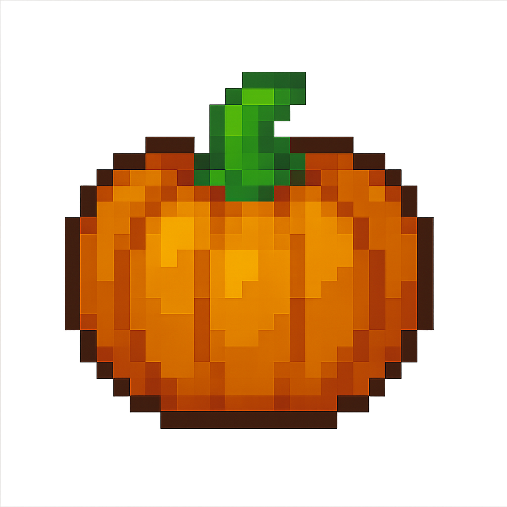

🌻 Bem-vindo à Horta Interativa!
Clique em um canteiro para aprender sobre o vegetal.
Verduras


Legumes



Informações de Cultivo
Dicas para cuidar e cultivar sua horta.

Receitas
Pratos deliciosos usando os vegetais da horta.

Curiosidades
Fatos divertidos sobre agricultura urbana.